概念:指两个或多个事件在同一时间间隔内发生。这些事件宏观上是同时发生的，但微观上是交替发生的常考易混概念
并行:指两个或多个事件在同一时刻同时发生。
单核CPU:同一时刻只能执行一个程序，各个程序只能并发地执行
多核CPU:同一时刻可以同时执行多个程序，多个程序可以并行地执行
共享:即资源共享，是指系统中的资源可供内存中多个并发执行的进程共同使用。
互斥共享方式：系统中的某些资源，虽然可以提供给多个进程使用，但一个时间段内只允许一个进程访问该资源
同时共享方式：系统中的某些资源，允许一个时间段内由多个进程“同时”对它们进行访问
虚拟:是指把一个物理上的实体变为若干个逻辑上的对应物。物理实体(前者)是实际存在的，而逻辑上对应物(后者)是用户感受到的。
异步:在多道程序环境下，允许多个程序并发执行，但由于资源有限，进程的执行不是一贯到底的而是走走停停，以不可预知的速度向前推进，这就是进程的异步性。
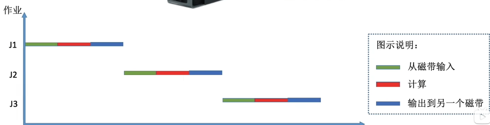
主要缺点:内存中仅能有一道程序运行，只有该程序运行结束之后才能调入下一道程序。CPU有大量的时间是在空闲等待I/0完成。资源利用率依然很低。
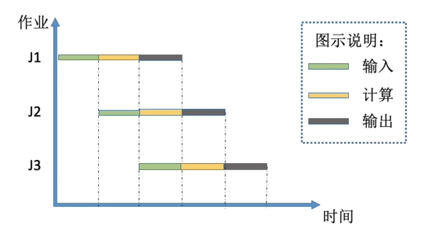
主要优点:多道程序并发执行，共享计算机资源。资源利用率大幅提升，CPU和其他资源更能保持“忙碌”状态，系统吞吐量增大， 主要缺点:用户响应时间长，没有人机交互功能>(用户提交自己的作业之后就只能等待计算机处理完成，中间不能控制自己的作业执行。eg:无法调试程序/无法在程序运行过程中输入一些参数)
分时操作系统:计算机以时间片为单位轮流为各个用户/作业服务，各个用户可通过终端与计算机进行交互主要优点:用户请求可以被即时响应，解决了人机交互问题。允许多个用户同时使用一台计算机，并且用户对计算机的操作相互独立，感受不到别人的存在。
作业服务一个时间片，不区分任务的紧急性 主要缺点:不能优先处理一些紧急任务。操作系统对各个用户/作业都是完全公平的，循环地为每个用户/
在实时操作系统的控制下，计算机系统接收到外部信号后及时进行处理， 并且要在严格的时限内处理完事件。实时操作系统的主要特点是及时性和可靠性
**硬实时系统:**必须在绝对严格的规定时间内完成处理
**软实时系统:**能接受偶尔违反时间规定
内核程序只能跑特权指令
运行内核程序时cpu处于内核态
应用程序只能跑非特权指令
运行应用程序时cpu处于用户态
CPU中PSW的数值代表着cpu当前的状态；1是内核态，0是用户态
内核态→用户态:执行一条特权指令--修改PSW的标志位为“用户态”，这个动作意味着操作系统将主动让出CPU使用权
用户态→内核态:由“中断”引发，硬件自动完成变态过程，触发中断信号意味着操作系统将强行夺回CPU的使用权
中断的作用：让操作系统内核强行夺回CPU的控制权，使CPU从用户态变为内核态
陷阱、陷入，故障，终止
中断检查:内中断:CPU 在执行指令时会检查是否有异常发生
时钟终端，I/O中断请求
中断检查:外中断:每个指令周期末尾，CPU都会检查是否有外中断信号需要处理
中断处理程序：每一种中断都对应一种中断处理程序，通过‘中断向量表’实现
中断处理程序：每一种中断都对应一种中断处理程序，通过‘中断向量表’实现
“系统调用”是操作系统提供给应用程序(程序员/编程人员)使用的接口，可以理解为一种可供应用程序调用的特殊函数，应用程序可以通过系统调用来请求获得操作系统内核的服务
系统调用与库函数的区别：
什么功能要用系统调用实现?
凡是与共享资源有关的操作、箍直接影响到其他进程的操作，一定需要操作系统介入，就需要通过系统调用来实现 传参
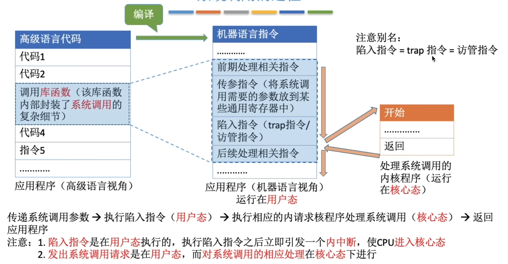
传递系统调用参数→执行陷入指令(用户态>)→执行相应的内请求核程序处理系统调用(核心态>)→返回应用程序
程序时静态的
进程是动态的
当进程被创建时会分配一个唯一的不重复的PID
进程信息都被保存在一个数据结构PCB(ProcessControlBlock)中，即进程控制块操作系统需要对各个并发运行的进程进行管理，但凡管理时所需要的信息，都会被放在PCB中
PCB是进程存在的唯一标志，当进程被创建时，操作系统为其创建PCB，当进程结束时，会回收其PCB。
在PCB中保存的信息：
程序段：程序的代码
数据段：运行过程中产生的各种数据
程序段、数据段、PCB三部分组成了进程实体(进程映像)引入进程实体的概念后，可把进程定义为:进程是进程实体的运行过程，是系统进行资源分配和调度的一个独立单位。
进程是进程实体的运行过程，是系统进行资源分配和调度的一个独立单位
PCB是进程存在的唯一标准
创建态（新建态）：一个进程要被创建
就绪态
运行态：正在处理机上运行
运行态->阻塞态（主动行为）
阻塞态（等待态）：因为等待某个事件而无法继续执行，当等待的事件被运行之后就会变为就绪态
阻塞态->就绪态（被动行为）
注意:不能由阻塞态直接转换为运行态，也不能由就绪态直接转换为阻塞态>(因为进入阻塞态是进程主动请求的，必然需要进程在运行时才能发出这种请求)
终止态（结束态）：运行结束时成为终止态
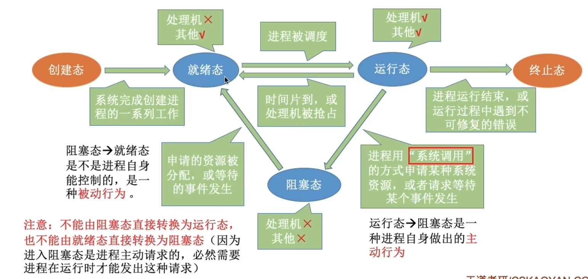
链接方式：按招进程状态将PCB分为多个队列
索引方式：创建索引表
进程控制的主要功能是对系统中的所有进程实施有效的管理，它具有创建新进程、撤销已有进程、实现进程状态转换等功能。
原语的执行具有原子性，即执行只能一气呵成，不允许被中断
可以用关中断指令和开中断指令这两个特权指令实现原子性
执行关中断指令后遇到中断指令不会中断，等执行完开中断指令后才会运行之前的中断
高级：基于存储区的共享:操作系统在内存中划出一块共享存储区，数据的形式、存放位置都由通信进程控制，而不是操作系统。这种共享方式速度很快，是一种高级通信方式。
低级：基于数据结构的共享:比如共享空间里只能放一个长度为10的数组。这种共享方式速度慢、限制多，是一种低级通信方式
直接挂到接受进程的消息队列里
消息先发到中间体
管道的实质是循环队列，只能顺序读取
线程成为了程序执行流的最小单位
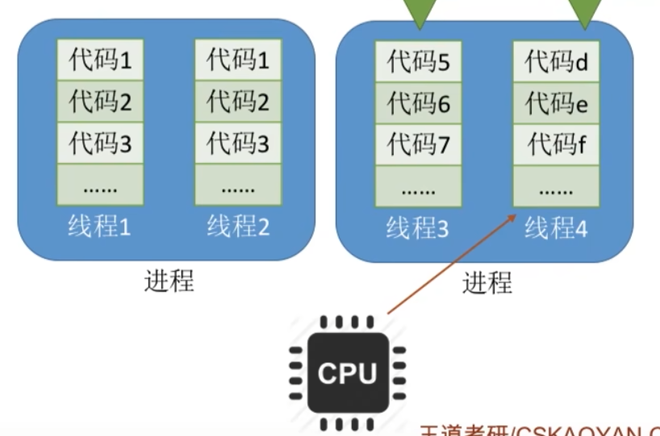
线程是一个基本的CPU执行单元，也是程序执行流的最小单位。引入线程之后，不仅是进程之间可以并发，进程内的各线程之间也可以并发，从而进一步提升了系统的并发度，使得一个进程内也可以并发处理各种任务(如QQ视频、文字聊天、传文件)
引入线程后，进程只作为除CPU之外的系统资源的分配单元(如打印机、内存地址空间等都是分配给进程的)。
优点：切换在用户空间即可完成，不需要切换到核心态态，线程管理的系统开销小，效率高
缺点：当一个用户级线程被阻塞后，整个进程都会被阻塞，并发度不高，多个线程不可在多核处理机上并行运行
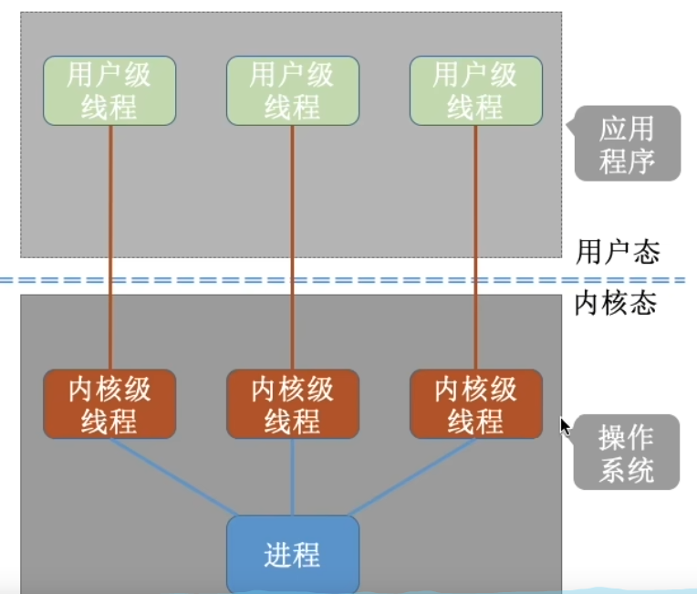
优点：当一个线程被阻塞后，其他线程不受影响，并发能力强，多线程可在多核处理机上并行执行
缺点：一个用户进程会占用多个内核级线程，线程切换由操作系统内核完成，需要切换到和心态，线程管理的成本高，开销大
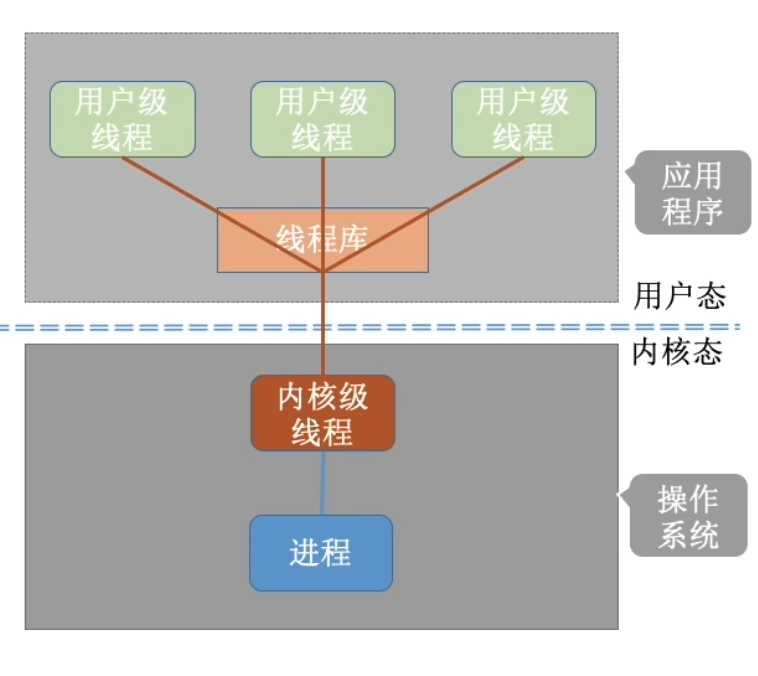
优点：用户级线程的切换在用户空间即可完成，不需要切换到核心态，线程管理的系统开销小，效率高
缺点：当一个用户级线程被阻塞后，其他也会被阻塞，并发度不高，多个线程不可再多核处理机上并行运行
只有内核级线程才是处理机分配的单位
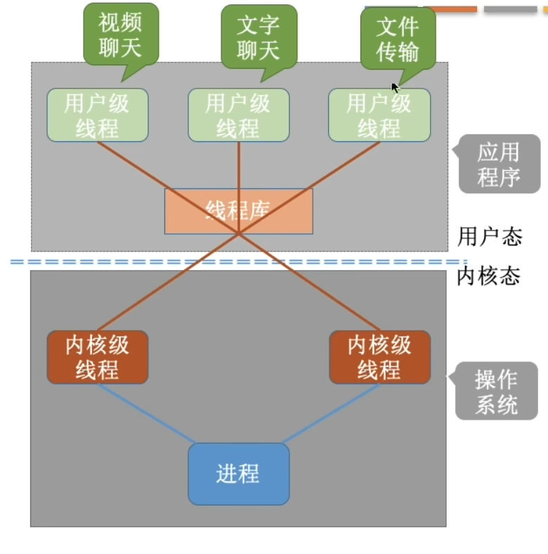
所有用户级线程都被阻塞时，这个进程才会被阻塞
解决了并发度不高的缺点，又克服了一对一模型中一个用户进程占用太多内核级线程，开销大的缺点
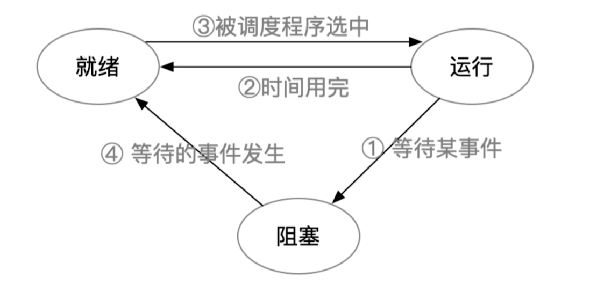
线程标识符（TID）
程序计数器PCP:程序目前执行到哪里
其他寄存器：线程运行的中间结果
堆栈指针：保存函数调用信息，局部变量
线程运行状态：运行/就绪/阻塞
优先级：线程调度，资源分配的参考
按某种算法选择一个进程将处理机分配给它
| 要做什么 | 调度发生的位置 | 发送频率 | 对进程状态的影响 | |
|---|---|---|---|---|
| 高级调度 (作业调度) | 按照某种规则，从后背队列中选择合适的作业将其调入内存，并为其创建进程 | 外存->内存（面向作业） | 最低 | 无->创建态->就绪态 |
| 中级调度（内存调度） | 按照某种规则，从挂起队列中选择合适的进程将其数据调回内存 | 外存->内存 | 中等 | 挂起态->就绪态（阻塞挂起->阻塞态） |
| 初级调度（进程调度） | 按照某种规则，从就绪队列中选择一个进程为其分配处理机 | 内存->cpu | 最高 | 就绪态->运行态 |
进程正常终止
运行过程中发生异常而终止
进程主动请求阻塞
分给进程的时间片用完
有更紧急的事件需要处理
有更高优先级的进程进入就绪队列
在处理中断的过程中
进程在操作系统内核程序临界区中
在原语操作过程中
临界资源：一个时间段只允许一个进程使用的资源，各进程需要互斥地访问临界资源
临界区：访问临界资源的那段代码
内核程序临界区一般是用来访问某种内核数据结构的，比如进程的就绪队列(由各就绪进程的PCB组成)
访问时会对该数据结构上锁，所以要让该进程迅速访问完该数据结构之后解锁，所以不能进行进程调度
只允许进程主动放弃处理机
允许处理机被动放弃
“狭义的进程调度”与“进程切换”的区别:
狭义的进程调度指的是从就绪队列中选中一个要运行的进程。(这个进程可以是刚刚被暂停执行的进程，也可能是另一个进程，后一种情况就需要进程切换)
进程切换是指一个进程让出处理机，由另一个进程占用处理机的过程。
广义的进程调度包含了选择一个进程和进程切换两个步骤。 进程切换的过程主要完成了: 1.对原来运行进程各种数据的保存2.对新的进程各种数据的恢复 (如:程序计数器、程序状态字、各种数据寄存器等处理机现场信息，这些信息一般保存在进程控制块)
注意:进程切换是有代价的，因此如果过于频繁的进 行进程调度、切换，必然会使整个系统的效率降低使nn 系统大部分时间都花在了进程切换上，而真正用于执行进程的时间减少。
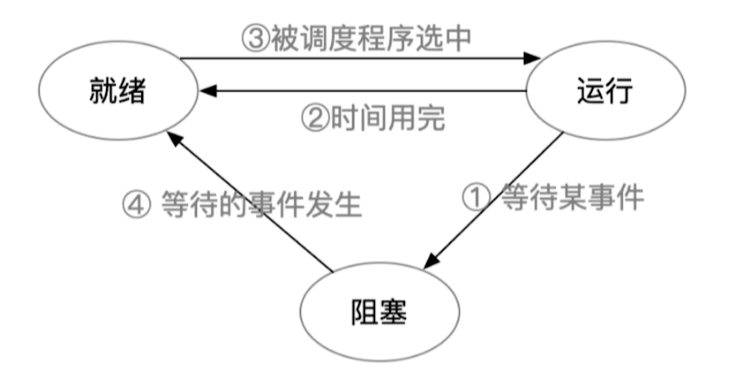
②和③由调度程序引起，调度程序决定：
让谁运行? --调度算法
运行多长时间？--时间片大小
创建新进程
进程退出
运行进程阻塞
I/O中断发生
非抢占式调度策略，只有运行进程阻塞或退出才触发调度程序工作
抢占式调度策略，每个时钟中断或k个时钟中断会触发调度程序工作
优先级最低
可以是0地址指令，占一个完整的指令周期
能耗低
利用率=忙碌的事件/总时间
单位时间内完成作业的数量
系统吞吐量=总共完成了多少道作业/总共花的时间
周转时间=作业完成时间-作业提交时间
平均周转时间=各作业周转时间之和/作业数
带劝周转时间=作业周转时间/作业实际运行的时间
等待时间=周转时间-运行时间
作业/进程处于等待处理机状态时间之和
用户提交请求到首次产生相应所用的时间
| 算法思想 | 先到先服务 |
|---|---|
| 算法规则 | 按照作业/进程到达的先后顺序进行服务 |
| 用于作业/进程调度 | 用于作业调度时，考虑的是哪个作业先到达后备队列，用于进程调度时，考虑的是哪个进程先到达就绪队列 |
| 是否可抢占 | 非抢占式算法 |
| 优缺点 | 优点：公平，算法实现简单 缺点：对长作业有利，对短作业不利 |
| 是否会导致饥饿 | 不会 |
| 算法思想 | 追求最少得平均等待时间，最少的平均周转时间，最少得平均平均带劝周转时间 |
|---|---|
| 算法规则 | 服务时间最短的作业优先得到服务 |
| 用于作业/进程调度 | 皆可，处理进程调度时称为:短进程优先算法（SPF） |
| 是否可抢占 | SPF和SJF是非抢占式算法,但是也有抢占式的版本--最短剩余时间优先算法（SRTN） |
| 优缺点 | 优点:“最短的”平均等待时间，平均周转时间 缺点：对短作业有利，对长作业不利，出现饥饿现象 |
| 是否会导致饥饿 | 会，如果一直得不到服务，则称为饿死 |
只有当前运行的进程主动放弃CPU时，才需要进行调度，调度时计算所有就绪进程的响应比，选响应比最高的进程上处理机
响应比=等待时间+要求服务时间/要求服务时间
| 算法思想 | 综合考虑作业/进程的等待时间和要求服务时间 |
|---|---|
| 算法规则 | 在每次调度时先计算各个作业/进程的响应比，选择响应比最高的作业/进程为其服务 |
| 用于作业/进程调度 | 皆可 |
| 是否可抢占 | 非抢占式 |
| 优缺点 | 综合考虑了等待时间和运行时间 等待时间相同时，服务时间短的优先 要求服务时间相同时，等待时间长的优先 |
| 是否会导致饥饿 | 否 |
| 算法思想 | 公平地、轮流地为各个进程服务，让每个进程在一定时间间隔内都可以得到响应 |
|---|---|
| 算法规则 | 按照各进程到达就绪队列的顺序，轮流让各个进程执行一个时间片。若进程未在一个时间内执行完，则剥夺处理机，将进程重新放入到就绪队列尾重新排队 |
| 用于作业/进程调度 | 用于进程调度，只有作业放入内存建立了相应的进程之后才能被分配处理机时间片 |
| 是否可抢占 | 抢占式 |
| 优缺点 | 优点：公平；响应快，适用于分时操作系统 缺点：由于高频率的进程切换，因此有一定开销，不区分任务的紧急程度 |
| 是否会导致饥饿 | 否 |
如果时间片太大，使得每个进程都可以在一个时间片内就完成，则时间片轮转调度算法退化为先来先服务调度算法，并且会增大进程响应时间。因此时间片不能太大。
另一方面，进程调度、切换是有时间代价的(保存、恢复运行环境)，因此如果时间片太小，会导致进程切换过于频繁，系统会花大量的时间来处理进程切换，从而导致实际用于进程执行的时间比例减少。可见时间片也不能太小。
优先数越大，优先级越高
| 算法思想 | 随着计算机的发展，特别是实时操作系统的出现，越来越多的应用场景需要根据任务的紧急程度来决定处理顺序 |
|---|---|
| 算法规则 | 每个作业/进程有各自的优先级，调度时选择优先级最高的作业/进程 |
| 用于作业/进程调度 | 既可用于作业调度，也可用于进程调度。甚至，还会用于在之后会学习的I/O调度中 |
| 是否可抢占 | 都有，非抢占式只在进程主动放弃处理机时进行时调度。抢占式在··就绪队列变化时，检查是否会发生抢占 |
| 优缺点 | 优点：公平；响应快，适用于分时操作系统 缺点：由于高频率的进程切换，因此有一定开销，不区分任务的紧急程度 |
| 是否会导致饥饿 | 会 |
多级反馈队列调度算法
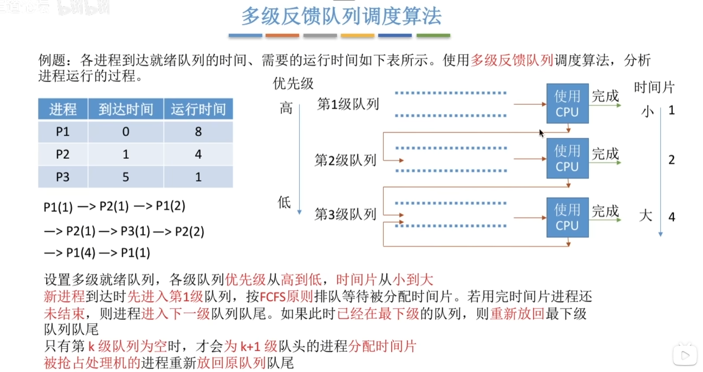
系统中按进程类型设置多个队列，进程创建成功后插入某个队列
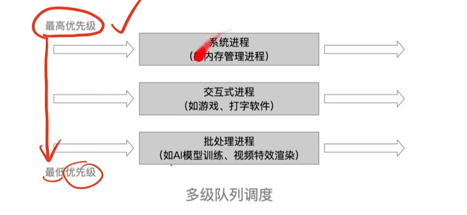
队列之间可采取固定优先级，或时间片划分
固定优先级：高优先级空时低优先级进程才能被调度
时间片划分：如三个队列分配时间50%，40%，10%
各队列可采用不同的调度策略，如：系统进程队列采用优先级调度
交互式队列采用时间片轮转
批处理队列采用先来先服务
并发性带来了异步性，有时需要通过进程同步解决这种异步问题，有的进程之间需要相互配合地完成工作，各进程的工作推进需要遵循一定的先后顺序。
对临界资源的访问，需要互斥进行，即同一时间段内只能允许一个进程访问该资源
进入区：检查是否可进入临界区，若可进入，需要“上锁“ 临界区：访问临界资源的那段代码 退出区：负责“解锁" 剩余区：其余代码部分
**空闲让进：**临界区空闲时，应允许一个进程访问 忙则等待：临界区正在被访问时，其他试图访问的进程需要等待 有限等待：要在有限时间内进入临界区，保证不会饥饿 让权等待：进不了临界区的进程，要释放处理机，防止忙等
设置一个变量表示当前允许进入临界区的进程号，每个进程进入临界区的权限只能被另一个进程赋予
int turn = 0;
//p0进程：
while（turn != 0);
critical section;
turn = 1;
remainder section;
int turn = 0;
//p1进程：
while（turn != 1);
critical section;
turn = 0;
remainder section;
如果对方不使用，临界区就会一直空闲
违背了**空闲让进**
先检查后上锁
设置个数组标记各进程想进入临界区的意愿
bool flag[2];
flag[0] = false;
flag[1] = false;
//p0进程：
while（flag[1]);
flag[0]=true;
critical section;
flag[o]=false;
remainder section;
bool flag[2];
flag[0] = false;
flag[1] = false;
//p0进程：
while（flag[0]);
flag[1]=true;
critical section;
flag[1]=false;
remainder section;
检查和上锁不是一气呵成的，中间可能发生进程切换
违反忙则等待
先上锁后检查
bool flag[2];
flag[0] = false;
flag[1] = false;
//p0进程：
flag[0]=true;
while（flag[1]);
critical section;
flag[o]=false;
remainder section;
bool flag[2];
flag[0] = false;
flag[1] = false;
//p1进程：
flag[0]=true;
while（flag[1]);
critical section;
flag[o]=false;
remainder section;
解决了忙则等待，但违背了空闲让进，有限等待
会因各进程都长期无法访问临界资源而产生饥饿现象
bool flag[2];
int turn = 1;
flag[0] = false;
flag[1] = false;
//p0进程：
flag[0]=true;
turn = 1;
while（flag[1] && turn==1);
critical section;
flag[o]=false;
remainder section;
//p1进程
flag[1]=true;
turn = 0;
while（flag[0] && turn==0);
critical section;
flag[1]=false;
remainder section;
遵循了空闲让进、忙则等待、有限等待三个原则，但是依然未遵循让权等待的原则
利用“开/关中断指令”
优点：简单高效
缺点：不适用于多处理机，只能用于内核进程，不适用于用户进程
TSL指令是用硬件实现的，执行的过程不允许被中断，只能一气呵成，
TSL指令把上锁和检查操作用硬件的方式变成了一气呵成的原子操作
优点：实现简单，无需像软件实现那样严格检查是否会有逻辑漏洞；适用于多处理环境
缺点：不满足让权等待，暂时无法进入临界区的进程会占用CPU并且循环执行TSL，从而导致忙等
优点：实现简单，无需像软件实现那样严格检查是否会有逻辑漏洞；适用于多处理环境
缺点：不满足让权等待，暂时无法进入临界区的进程会占用CPU并且循环执行TSL，从而导致忙等
系统中的资源可以分为两类：
可剥夺资源，是指某进程在获得这类资源后，该资源可以再被其他进程或系统剥夺，CPU和主存均属于可剥夺性资源；
另一类资源是不可剥夺资源，当系统把这类资源分配给某进程后，再不能强行收回，只能在进程用完后自行释放，如磁带机、打印机等。
产生死锁中的竞争资源之一指的是竞争不可剥夺资源（例如：系统中只有一台打印机，可供进程P1使用，假定P1已占用了打印机，若P2继续要求打印机打印将阻塞）
产生死锁中的竞争资源另外一种资源指的是竞争临时资源（临时资源包括硬件中断、信号、消息、缓冲区内的消息等），通常消息通信顺序进行不当，则会产生死锁
若P1保持了资源R1,P2保持了资源R2，系统处于不安全状态，因为这两个进程再向前推进，便可能发生死锁 例如，当P1运行到P1：Request（R2）时，将因R2已被P2占用而阻塞；当P2运行到P2：Request（R1）时，也将因R1已被P1占用而阻塞，于是发生进程死锁
互斥条件：进程要求对所分配的资源进行排它性控制，即在一段时间内某资源仅为一进程所占用。 请求和保持条件：当进程因请求资源而阻塞时，对已获得的资源保持不放。 不剥夺条件：进程已获得的资源在未使用完之前，不能剥夺，只能在使用完时由自己释放。 环路等待条件：在发生死锁时，必然存在一个进程--资源的环形链。